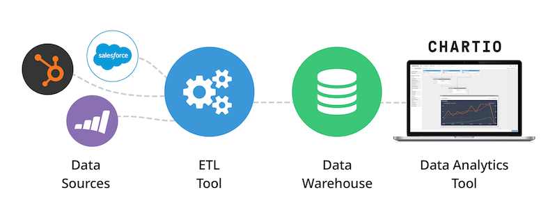
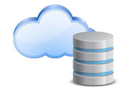

The Modern Data Stack
In today's world, changes happen faster and faster. We see it in our daily lives, with all the AI talks, the newest smartphones, and more. The data world is no exception to this phenomenon. In recent years, new data tools and improvements to existing ones have made the life of data users easier.
What is a Data Stack?
A tech stack is a combination of programming languages, frameworks, libraries, tools, and technologies used to develop and deploy a software application or system.
For data, it's the combination of tools used to ingest, organize, store, transform, and visualize data. A stack can range from super simple (technically, a simple Postgres database could be a data stack) to more complex ones with many tools and languages.
Today, many great tools provide a lot of cool features, allowing us to have a scalable, maintainable, and governed data stack. However, it can also have its drawbacks.
The Modern Data Stack
What differentiates a modern data stack from what we could call a legacy data stack?
Flexibility and Accessibility
Let's first talk a little bit about infrastructure installation. Some years ago, we had many data warehouses hosted on on-premises databases. These databases were sometimes a pain to install and maintain. Furthermore, with more and more data used every day, the storage needs are growing exponentially, and performance can suffer.
With cloud-based databases, everything is easier. Generally, the installation of a database is faster and simpler. You gain more flexibility because you can easily scale your storage capacity and computation power, meaning you can handle larger volumes of data more quickly. It's not only the database that has become cloud-based: solutions to visualize and transform data have too. For instance, Tableau Server allows you to create and share your dashboards in the cloud with your organization, and DBT Cloud enables you to transform your data in the cloud.
Another way to gain flexibility is that each step of the data journey in a modern data stack is handled by a specialized tool (e.g., DBT for transformation, Airbyte for ingestion, Tableau for visualization), which are easily connected to the other tools in the chain. This means you're no longer locked into a monolithic ecosystem like Talend but have the freedom to test and choose from many diverse tools.
However, this flexibility comes with a potential cost. Integrating multiple tools can become expensive, and managing these tools can require additional overhead and expertise.
User-Friendly for Non-Tech and Business People
Modern data stacks have become increasingly user-friendly, making it easier for non-technical and business users to interact with data. Tools like Looker and Tableau have intuitive interfaces that allow users to create reports and dashboards without needing to write complex code. This democratization of data enables faster decision-making and empowers more team members to engage with data.
However, without good practices and governance, this ease of use can lead to maintenance challenges. Without proper documentation and standardization, dashboards and reports can become inconsistent, making it difficult to ensure data quality and reliability. Implementing best practices for documentation, version control, and review processes is essential to maintain the integrity of the data.
Moreover, training and support are crucial to help non-technical users fully leverage these tools. Offering workshops, creating comprehensive guides, and maintaining a support channel can significantly improve the adoption and effective use of the modern data stack.
SQL Usage for Data Transformation and Quality
One of the key aspects of the modern data stack is the widespread use of SQL for data transformation. Tools like DBT (data build tool) allow analysts to write SQL queries to transform raw data into a more usable format. This approach leverages the familiarity and power of SQL, making it accessible to a broad range of users.
Additionally, modern tools include robust testing frameworks to ensure data quality. For instance, DBT allows you to write tests that validate your data transformations, helping to catch errors early in the process. These tests can check for null values, ensure referential integrity, and validate business logic, ensuring that the transformed data meets the required standards.
Furthermore, data observability platforms like Monte Carlo and Databand provide continuous monitoring and alerting, helping teams quickly identify and resolve data quality issues. This proactive approach ensures that any anomalies or discrepancies in the data are addressed before they impact business decisions.
Data Governance
Data governance is crucial in a modern data stack. As organizations handle increasing volumes of data, ensuring that data is accurate, secure, and accessible to the right people becomes paramount. Tools like Alation and Castor provide data cataloging, lineage tracking, and governance features that help organizations manage their data assets effectively. These tools offer a centralized repository where data definitions, usage, and ownership are documented, ensuring that everyone in the organization has a clear understanding of the data.
Effective data governance also involves implementing policies and procedures to protect sensitive data and ensure compliance with regulations like GDPR and CCPA. Role-based access control (RBAC) and data masking techniques can help protect data privacy and security.
Moreover, fostering a data-driven culture where data stewardship and accountability are emphasized can significantly enhance data governance. Regular audits, training programs, and clear communication channels are essential to maintaining robust data governance practices.
The Future: AI and the Modern Data Stack
AI is making the modern data stack even more relevant. Almost all data and tech companies are integrating AI into their tools, enhancing capabilities across the board.
AI in Data Visualization
AI can automate the creation of dashboards and reports, identifying trends and anomalies that might be missed by human analysts. Tools like ThoughtSpot leverage AI to provide natural language querying and automated insights, making data exploration more intuitive. AI-powered visualizations can dynamically adjust based on user queries, providing more relevant and actionable insights.
Moreover, predictive analytics and machine learning models can be integrated into data visualization platforms, offering advanced forecasting and trend analysis. This enables businesses to make data-driven decisions with a forward-looking perspective, identifying potential opportunities and risks.
AI to Help You Code
AI-driven code generation tools can assist in writing SQL queries and data transformation scripts. For example, GitHub Copilot and other AI coding assistants can suggest code snippets, detect errors, and optimize performance, accelerating the development process and reducing the learning curve for new users. These tools can also provide recommendations for best practices, helping maintain code quality and consistency.
AI can also facilitate data integration by automating the extraction, transformation, and loading (ETL) processes. Intelligent data mapping and schema matching can significantly reduce the time and effort required to integrate new data sources, enabling faster data onboarding and reducing manual errors.
Final thoughts
The evolution of the modern data stack is a testament to the rapid advancements in technology and the growing importance of data in decision-making. By embracing the modern data stack, organizations can harness the full potential of their data, driving innovation and achieving competitive advantages. As AI and other emerging technologies continue to integrate into the data ecosystem, the capabilities and possibilities of the modern data stack will only expand further.
If you have any questions, don't hesitate to contact me :)